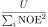

Next: Stereochemistry - the auto-analysis Up: The N-state model or Previous: NOEs in the N-state Contents Index
A published application of the N-state model in relax is:
This analysis of the stereochemistry of a small molecule consists of two steps. The first part is to determine the relative configuration. The idea is to use NMR data (consisting of RDCs and NOEs) to find the relative configuration. Ensembles of 10 members are created from molecular dynamics simulations (MD) or simulated annealing (SA). These are then ranked by the RDC Q factor and NOE violation. By converting the NOE violation into a Q factor:
| QNOE2 = , | (10.1) |
where U is the quadratic flat bottom well potential, i.e. the NOE violation in Å2, and the denominator is the sum of all squared NOEs. A combined Q factor is calculated as:
| Qtotal2 = QNOE2 + QRDC2. | (10.2) |
The second step is to distinguish enantiomers. As NMR data is symmetric, it cannot distinguish enantiomers. Therefore an optical technique such as optical rotatory dispersion can be used. For molecules experiencing large amounts of motion, sampling all possible conformations, calculating the expected dispersion properties, and calculating an averaged dispersion curve is not feasible. The idea is therefore to combine NMR and ORD by taking the best NMR ensembles from step one to use for ORD spectral prediction.